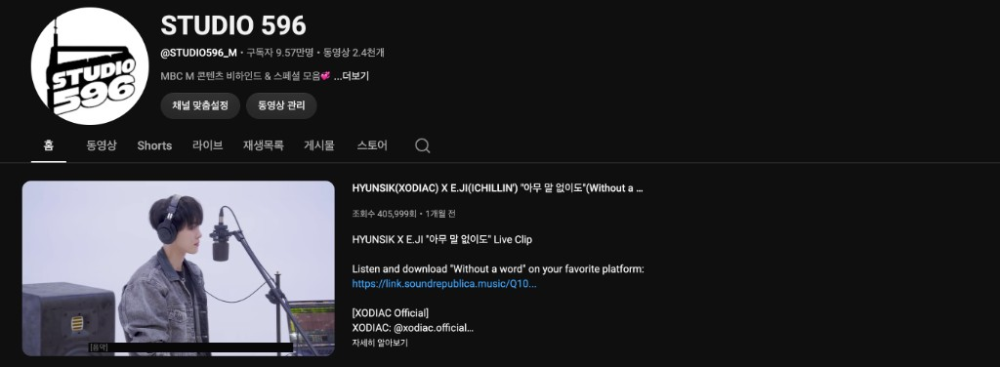

MBC+
유통·홍보 노출 · 방송·디지털 채널 연계. 음원·클립 확산과 팬 접점에 기여합니다.
THE WAVES X MBC+ · Fan-Driven Duet Collab
A New Collaborative K-POP IP
팬 · 아티스트 · 플랫폼이 연결되는 확장형 K-POP 협업 프로젝트
01 Overview
The Waves와 MBC+, 그리고 듀엣에 참여하는 기획사(남자 아티스트 측 · 여자 아티스트 측)가 함께 만드는 팬 참여 듀엣 콜라보입니다. 기획사는 아티스트로 합류하고, 제작·노출·유통이 한 흐름으로 이어집니다.
02 Structure
네 주체가 역할을 나눠 DUET 한 라인으로 합류합니다.
유통·홍보 노출 · 방송·디지털 채널 연계. 음원·클립 확산과 팬 접점에 기여합니다.
음원부터 영상까지 전체 콘텐츠 제작을 맡고, 프로젝트 운영을 함께 집니다.
듀엣 아티스트 소속 기획사. 라인업·일정·방송·프로모 협조로 참여합니다.
음원 유통 · DSP · 정산 등 발매 레일. 방송·디지털과 맞물리도록 설계합니다.
03 IP & Platforms
DUET에는 MBC+ 측 디지털·팬 채널과 The Waves의 KPOPX가 함께 붙습니다. 아래는 프로젝트와 연동되는 대표 자산입니다.
MBC+ 디지털 영역의 대표 채널. 클립·티징 등 노출과 릴리즈 후 확산에 활용합니다.
라이브 클립·스튜디오 퍼포먼스 등 영상 IP 라인. 발매 후 무대감을 영상으로 고정합니다.
팬 커뮤니티·투표·이벤트. DUET의 팬 참여 레일과 직접 연결됩니다.
The Waves의 음악·숏폼 제작 툴. 청취에서 참여·생성으로 이어지는 경험과 프로모션을 묶습니다.
팬 투표와 디지털 채널 시청·KPOPX 참여가 하나의 프로젝트 안에서 이어지도록 설계합니다.
04 Content Pipeline
단순 제작–발매에 그치지 않고 티징–이벤트–방송–비하인드까지 하나의 설계로 묶입니다. 매 시즌 새 아티스트·팬덤을 연결하는 반복 가능한 포맷입니다.
05 Season 1
현식 × 이지 첫 레퍼런스 시즌. 웹드 전 남편은 열여덟에서의 호흡을 바탕으로 음원 협업을 이어간 사례로, 발매 · 라이브 클립 · 방송 무대까지 완주했습니다.

증빙: STUDIO 596 피처드 클립 (조회 405K+ 스냅샷 예시)
06 Promotion
SNS·커버·클립을 넘어 팬 행동 → 스트리밍 · 시청 · KPOPX 가입 · 이벤트까지 한 줄로 묶었습니다. 음방 무대·LAR까지 연계해 온오프 결합 레퍼런스입니다.
07 Results
Season 1은 발매·프로모·음악방송·팬 이벤트·플랫폼 연동까지 실제로 실행·완료된 레퍼런스입니다. 다음 듀엣에도 같은 레일을 그대로 가져갈 수 있습니다.
수치·비교 지표는 각 카드에 채워 넣을 수 있습니다.
08 Expansion
Season 1로 제작–운영 골격을 검증했습니다. 이후 다양한 아티스트·장르·팬덤·브랜드 결합 시 동일 레일을 반복 적용합니다.
09 Partners
협업의 축은 The Waves와 MBC+, 그리고 듀엣에 참여하는 기획사·유통입니다. 방송·디지털 IP·팬 플랫폼이 한 프로젝트 안에서 연결됩니다.
Partnership
채널 · 플랫폼 · 유통
다음 듀엣 콜라보를 함께 만들어 보세요.
The Waves × MBC+ · 팬 참여 듀엣 IP